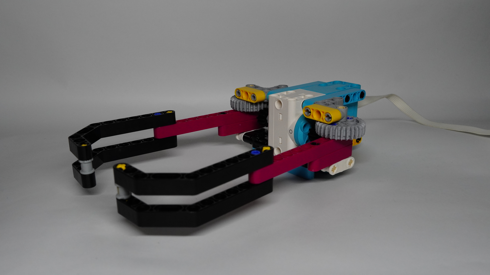

At first, I didn't know which direction to take with this project. So I got inspiration from youtube and learned how I could apply rotation perpendicularly. With this knowledge, I created mandibles similar to insects, specifically ants, these lego mandibles I created are desinged to mimic these insects picking up their food. This same build may be used to make a crane inspired build later on. Additionally, I could also build onto this design by adding wheels to make this like an actual ant and make it pick up certain objects based on color or something.